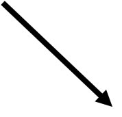
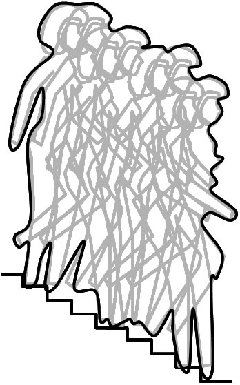

This page presents various texts in Ithkuil including interlinear morphological analyses similar to the examples in previous chapters. Additionally, a few narrative presentations are offered based on presentations the author has given in other venues or formats.
For the Monty Python Fans Out There... |
Tî akt’asalb abjatļud.
1m-PRP STA-‘hover’-OBL-NRM/PRX/M/CSL/UNI-CVY1/5 STA-‘eel’-NRM/DEL/M/CSL/DCT-SUF1/9
My hovercraft is full of eels. LISTEN
Opening Line from Anna Karenina |
The following narrative presents the step-by-step procedure undertaken by the author in translating the opening line of Tolstoy’s Anna Karenina into Ithkuil. It should be noted that I have used the English translation of the sentence instead of the Russian original as my translation source:
All happy families resemble one another, each unhappy family is unhappy in its own way.
STEP ONE: Semantic Analysis of Source Sentence
Before beginning translation, it is important to carefully analyze the actual meaning of the sentence from a cognitive
standpoint, i.e., what is the cognitive intent of the sentence as opposed to how it reads stylistically? This is
important because Ithkuil must convey the underlying cognitive intent of the sentence. In this sentence, one might
initially interpret the sentence to suggest that there are two different kinds of families, one happy, the other unhappy,
and that happy ones can’t ever be unhappy or vice-versa. But in fact, all families are capable of being happy or
unhappy. Therefore, the Ithkuil translation will reword the sentence to convey that when families are happy, they
resemble one another, whereas when they are unhappy they don’t resemble one another. Secondly, we must analyze
what is meant by the word ‘resemble’. In English, ‘resemble’ refers to similarity in visual appearance or observed
behavior. However, the intent of the sentence is that the similarity of behavior is intrinsic and occurs whether or not
there is anyone available to visually observe it. Therefore, the Ithkuil translation must avoid use of any concept such
as ‘resemble’ to imply visual observation of behavior. The behavior simply is similar or dissimilar, regardless of
whether there is any visual comparison made. The Ithkuil translation will therefore simply distinguish between
similarity in the manifestation/behavior of happiness in families versus dissimilarity in the manifestation/behavior of
unhappiness in families. Finally, in the original sentence, the second clause is syntactically disguised as a co-equal main clause, however, cognitively it is a dependent clause in a contingent relationship to the first half of the
sentence. The “missing” conjunction should be ‘whereas’ or ‘as opposed to’ or ‘while on the other hand’ since it is
being contrastively compared to the first clause. Ithkuil provides a case-frame (the COMPARATIVE) for exactly these kinds of contrastive comparisons. Therefore the Ithkuil sentence will employ such a case-frame when translating the second half of the sentence. So at this point, what we will be translating into Ithkuil reads something like “All families manifest happiness similarly, whereas they manifest unhappiness dissimilarly.”
STEP TWO: Separating the Lexical from the Morphological
At this point, the original sentence must be analyzed to determine what Ithkuil lexical roots/stems will be necessary,
as opposed to those words/concepts in the original which can be translated via morphological components instead of
lexical roots/stems. We can see we are making a statement about families and are qualifying those families as happy
or unhappy. Therefore it is likely we will need Ithkuil lexemes for ‘family’ and ‘happy/happiness.’ We have
already determined above that we do not need a word for ‘resemble’ and words like ‘all’, ‘one another’, ‘each’, ‘in
its own way’ carry little intrinsic meaning by themselves until they are used in conjunction with the main
participants (nouns and verbs) of the sentence. We know from studying Ithkuil morphology that all of these words
will be handled by morphological, not lexical means when translating. Therefore, we only need two main lexemes: ‘family’ and ‘happy/happiness.’
STEP THREE: Analysis/Derivation Using Ithkuil Morphological Categories
Those who have studied the Configuration and Affiliation categories of Ithkuil morphology might recognize at this
point that the concept ‘family’ is a composite sort of concept, indicating an entity composed of sub-components or
sub-members, each one of whom is a ‘family member.’ Ithkuil tends not to lexify as discrete stems those words that
are gestalt entities comprised of sub-components. Rather it is the sub-components that are lexified into stems and
then morphologically modified via the various Configuration and Affiliation categories. The Ithkuil lexicon
contains the Pattern 1, Stem 1, INFORMAL stem amm meaning a nuclear family member, derived from the root -MM- referring to the various
sanguine members of a nuclear family (parent, child, mother, father, son, daughter, etc.). A family consists of
various such members, each of whom are not identical in their attributes (e.g., gender, age, personality, talents, etc.).
A gestalt composite composed of non-identical members who are not physically interconnected, is shown by the
AGGREGATE [AGG] configuration in Ithkuil. Likewise, the resulting gestalt entity ‘family’ is more than the sum of
its parts from a cognitive standpoint (i.e., it is capable of participating in events or being described in ways
irrespective of its individual members), therefore it should be placed in the COALESCENT [COA] affiliation. Finally,
the particular sentence being translated talks about families in a timeless cultural sense, describing families in an
archetypal fashion. Such a sense can best be captured by use of the AMALGAMATE [AMG] context in Ithkuil. So far,
the Ithkuil word for ‘family’ we are fashioning has been declined for Configuration, Affiliation, and Context.
However, there are five remaining morphological categories for nominal formatives in Ithkuil. We must consider
each of these:
PERSPECTIVE: The sentence is comparing every family against every other family, thus it is speaking of each family as a single discrete entity, not a collective concept. This is reinforced by the use of the word ‘all’ (which in the Ithkuil translation will appear as the Inclusive suffix [INL] in ninth degree, meaning ‘each/every’). Thus the correct perspective is the default MONADIC perspective.EXTENSION: Each family is being considered as an entire discrete entity within the context of the sentence, therefore the default DELIMITIVE extension is appropriate.
DESIGNATION: The stem amm is in the default INFORMAL designation, as indicated by its syllabic stress pattern (recall from Section 1.3.3 that all monosyllabic stems are considered to have penultimate stress from a morphological standpoint).
ESSENCE: The sentence refers to all families in the real world, not families in a hypothetical or contrary-to-fact context, therefore the default NORMAL essence is appropriate.
CASE: The word ‘family’ will be the “subject” of a verb complex meaning ‘manifests happy behavior’. The appropriate semantic role for the subject of a non-causal descriptive state is as CONTENT, shown by the default OBLIQUE [OBL]case in Ithkuil.
The concept ‘happy/happiness’ is given in Ithkuil by the Pattern 1, Stem 2, FORMAL stem öqtá which literally means ‘degree of happiness/joy’.
This stem is derived from the root -QT- ‘DEGREE OF POSITIVE EMOTIONAL SATIETY/FULFILLMENT’. Qualitative
concepts such as happiness are usually lexified in Ithkuil as a spectrum or range which then takes the Sufficiency
[SUF] or Extent/Degree [EXN] suffix to indicate what particular amount/extent/degree of the quality is manifested,
anywhere from none up to an overabundance. In this case, we will use the [EXN1/6] suffix indicating ‘an above-normal
degree of’. Adjectives such as ‘happy’ don’t exist in Ithkuil; their equivalent is usually shown using a verbal
formative declined into either the STATIVE [STA] function or the DESCRIPTIVE [DSC] function. The choice
between using STATIVE or DESCRIPTIVE function for this translation is subtle. I have chosen [DSC] because it
captures more of the sense of describing the nature of the family itself (which is what I think the author was trying to
convey) rather than simply a state they are in. Verbal formatives are complex structures in Ithkuil, inflecting for 22
different morphological categories. So, besides the DSC function, the remaining 21 categories must be analyzed,
as follows:
CONFIGURATION: Conceptually, ‘happiness’ is not a gestalt composite, therefore the default UNIPLEX value is appropriate.AFFILIATION: The UNIPLEX configuration implies a default CONSOLIDATIVE affiliation, and the uses of the remaining three affiliations are inapplicable to the intended meaning of ‘happiness’.
PERSPECTIVE: The sentence is asserted as being true at all times, a “law of nature” about families, therefore the appropriate perspective is the NOMIC [N].
EXTENSION: The state of happiness being discussed is not described as having specific beginning or ending points, therefore the appropriate extension is PROXIMAL [PRX].
CONTEXT: Happiness as an emotional state exists irrespective of opinions, cultural ideas, social conventions, etc., therefore, the default EXISTENTIAL context is appropriate.
DESIGNATION: The stem is in the default INFORMAL designation, as indicated by its syllabic stress pattern.
ESSENCE: The sentence refers to happiness as a real-world state, not in a hypothetical or contrary-to-fact context, therefore the default NORMAL essence is appropriate.
ILLOCUTION: The sentence constitutes a propositional speech act, an utterance which is either true or false and can be either believed or disbelieved. Thus, the default ASSERTIVE illocution is appropriate.
VALENCE: The state of happiness is being compared between families, implying PARALLEL valence (i.e., one participant is engaged in or experiencing the same activity or state as the other). However, because the verbal formative will be carrying the [SIM1/8] suffix (meaning ‘very similarly’), the valence relationship between one family and another is already implied. This means that overtly showing the PARALLEL valence in this sentence is unnecessary (or at least optional).
VERSION: The utterance describes a non-hypothetical end-in-itself and is not goal-oriented, therefore the default PROCESSUAL version is appropriate.
FORMAT: Their is no incorporated stem in this verb, therefore the showing of Format is inapplicable.
MODALITY: There is no modal or hypothetical content in this sentence, therefore there is no modality.
LEVEL: While one might consider translating this sentence using Ithkuil’s EQUATIVE level, its use would imply that families manifest happiness exactly the same way (as opposed to similarly). This is not the intent behind the word ‘resemble’ and therefore use of the [SIM1/8] suffix (meaning ‘very similarly’) is more appropriate. Therefore, the default INDETERMINATE level is appropriate.
CASE-FRAME: As previously mentioned, the second clause of this sentence will employ the COMPARATIVE [CMP] case-frame to signify a “whereas X” or “as opposed to X” type of relationship.
VALIDATION: Since the statement is not an empirically verifiable statement, but is written as being a truthful assertion, the implied source of information behind the statement is as an inference on the part of the author based on his own intuition or feelings. Therefore the appropriate validation is the INFERENTIAL.
PHASE: The statement does not refer to any repetitive or iterative situation, therefore the default CONTEXTUAL phase is appropriate.
SANCTION: The statement constitutes an ontologically subjective assertion or allegation expressing an opinion or belief, potentially subject to challenge or refutation. Therefore, the appropriate sanction is the ALLEGATIVE [ALG].
ASPECT: The sentence contains no additional aspectual information.
MOOD: The sentence is an assertion of an alleged fact, therefore the default FACTUAL mood is appropriate.
BIAS: The utterance contains no overtly subjective attitude or bias.
STEP FOUR: Assemble the Ithkuil words
When putting these elements together to render the final Ithkuil sentence, I take the option to separate out some of the suffixes
into affixual adjuncts for the sake of phonetic euphony.
Here then, is the end result, accompanied by the most natural sounding literal translation into English:
Mmarnuqha than-n hwöeqtàdhûbüp öeqtóu’adhiböp.
STA-‘nuclear.family.member’-OBL-NRM/DEL/M/COA/AGG-INL1/9-IFL ALG INF-DSC-‘degree.of.happiness’-NRM/PRX/N/CSL/UNI-EXN1/6-SIM1/8-FML FRAMED-DSC-‘degree.of.happiness’-CMP-NRM/PRX/N/CSL/UNI-EXN1/1-SIM1/2-FML
All families are happy in the same way, while being unhappy in their own way. LISTEN
Description of Marcel Duchamp’s “Nude Descending a Staircase, No. 2” |
Ithkuil’s ability to express subjective, non-linear, and synergistic gestalts as easily as objective, linear, discrete, componential phenomena allows it to describe phenomena such as artistic works succinctly but in great detail. For example:
|  | -KKR- 'OBLIQUE VERTICAL MOTION'
|
 |
-Q- 'HIGHER ORDER LIFE-FORM'
|
-GV- 'CLOTHING'
|
-TN- 'SUPPORTING SURFACE AGAINST GRAVITY'
|
p - a - l-lš - i
|
-GW- 'AMBULATION'
|
 |
|
|
 |
|
 |
|
 |
|
Basic Greetings and Conversational Elements |
This section provides various formulaic statements and responses, both formal and informal, pertaining to some basic conversational elements.
Greetings/Salutations
The formal stem attá- is the general stem denoting ‘salutation/greeting.’ With the addition of the SSD1/6 suffix -ûk it conveys ‘farewell/leavetaking.’ The formal stem edná- ‘peace through fellowship’ and the informal stem edn- ‘goodwill/kindness’ are also used in greeting formulas. Many formal and informal phrases are possible using these stems, as shown by the following examples.
Ükhu attál.
I bid you greetings.Ki attàwîl.
Greetings to you.Attál. / Attàwîl.
Hello!/Greetings!/Salutations!Ki attàlûk.
Goodbye to you.Attàlûk.
Goodbye.Ükhu ettál.
I bid you welcome.Ükhu ettàlûk.
I bid you farewell.(În-n) ednal kü.
(May there be) goodwill to you.(În-n) uhednál.
(May there be) peace through fellowship between us.Ükhu attál în-n uhednaláň.
2m/DAT-1m-IND STA-‘greet’-NRM/DEL/M/CSL/UNI-FML EXH RCP-CNF-STA-‘peace.through.fellowship’-NRM/DEL/M/CSL/UNI-COO1/7/FML
I bid you greetings and may there be peace through fellowship between us.
How Are You?
The stem glal ‘state of health/physical well-being’ in conjunction with the suffix -ač ‘acceptably good/well’ are used to inquire about one’s well-being. As an affixual adjunct (see Section 8.3), the suffix -ač functions as a shortcut means of creating various informal expressions.
Ki glawulač?
How are you? (literally: Are you in acceptable health?)En-n ki ač.
Hopefully, things are well with you.Ti glalač.
I’m doing fine. (literally: I’m in acceptable health.)Ti ač.
I’m fine.
Thanks/Gratitude
The “short” form of communicating thanks is Tô myal, meaning “my thanks” or more specifically “my offer of gratitude.” This phrase is an informal abbreviated form of the following formal sentences:
Auspal ükhu tô myal.
DYN-‘give.in.exchange’-NRM/DEL/M/CSL/UNI-IFL 2m/DAT-1m/IND 1m-ATT STA-‘offer.of.gratitude’-OBL-NRM/DEL/M/CSL/UNI-IFL
I offer you my gratitude.
or
Uhispal ükhu tô myal kô ednaul.
CPL-CNF-DYN-‘exchange’-NRM/DEL/M/CSL/UNI-IFL 2m-ATT STA-‘goodwill/kindness’-CMM-NRM/DEL/M/CSL/UNI-IFL
I offer you my gratitude in exchange for your kindness.
The above sentences are addressed to one single person. If the addressee is an UNBOUNDED party or an AGGREGATE group of people, then appropriate modifications of Perspective, Configuration, etc., should be made to the personal reference adjuncts within the sentence, e.g., üphu, hükhu, pô, etc.
If the feeling/manifestation of gratitude is more formal, in response to an honor bestowed or to the extent that it leaves the grateful party feeling beholden to the addressee, the formal stem ömyál ‘gratefulness/feeling of being honored’ can be used in place of myal.
Variations on the above examples where the stems asp- or osp- are incorporated into the stem amy- are also possible.
The Lord’s Prayer |
Ömmële têhwei elthâ'àlôs
STA-'father'-VOC-NRM/DEL/M/CSL/UNI-RPS 1m-GEN-COA-CST STA-'creator.god'-LOC-NRM/DEL/M/CSL/UNI-PLA2/7
Our father in heavenîn-n imnadh kô adal
EXH-FAC DYN-'worship'-NRM/PRX/N/CSL/UNI-FML 2m-ATT STA-'name'-NRM/DEL/M/CSL/UNI
hallowed be your nameÎl-lm ¯euč’ane tehwei driocaipšé kû
EXH-CCL/FAC CPT-DYN-'imbue'-NRM/DEL/M/COA/UNI 1m-ABS-COA-CST STA-'rule'-CPS-NRM/DEL/A/CSL/UNI-UTE2/8-RPS/FML 2m-PRP
May your kingdom come to exist among us
(Literally: May the [metaphorical] environment which fosters/sustains your rule eventually [metaphorically] permeate us)Ôbartöák în-n ¯aipšalu
STA-'aspiration'-NRM/DEL/U/CSL/AGG-ATT/2m EXH-FAC CPT-DYN-'be.real'-NRM/DEL/M/CSL/UNI-AMG
May your will be done
(Literally: As for your aspirations, may they be made real)Swâ’ál elthâ'àlöňňôs
STA-'Earth'-LOC-NRM/DEL/M/CSL/UNI STA-'creator.god'-LOC-NRM/DEL/M/CSL/UNI-CTR1/2-PLA2/7
on Earth, not just in heavenř uigrawulakkönurň
SOL STA-'food/drink'-DIR-NRM/DEL/M/CSL/UNI-TPR3/5-AGC1/2-IPT1/9
please be one who enables us to eat and drink our critical sustenanceIekčawelöň okhühwei îvyoerduap ^uhékčeöt no.
DYN-'forgive'-DIR-NRM/DEL/M/CSL/UNI-COO1/2-IFL 2:ERG-Referent1:1m/Referent2:2m-1:DAT-1:COA-1:CST
STA-'morally right'-REF-NRM/PRX/U/CSL/AGG-SIM2/1-IFL
FRAMED-CPL-CNF-DYN-'seek and grant pardon'-FUN-NRM/DEL/U/CSL/UNI-IFL 1+ua-ERG
And forgive us in regard to our moral transgressions in the way we grant and receive forgiveness amongst each otheruibawetâmziúrön
MNF-'unwilled.desire'-DIR-NRM/DEL/U/CSL/UNI-MOT2/5-NA13/5-AGC1/2-IFL
‘be one who does not enable desires against better judgement to happen’uilthalaiňqàrzönöň tehwei
MNF-'Devil'-NRM/DEL/M/CSL/UNI-OAU2/8-IMP1/5-AGC1/2-COO1/2-FML 1m-ABS-COA-CST
And deliver us from evil
(literally: and be one who enables us to successfully avoid ideas associated with the Devil)
Note that Line Eight could also be written uibawetâmzìurön. A different way to translate Line Eight that puts the responsibility for avoiding tempation on us instead of God [I know it’s not how the original reads but personally it makes more sense to me], would be as follows:
în-n tihwei arz batâmz
EXH-FAC 1m-AFF-COA-CST IMP1/5 STA-'unwilled.desire'-NRM/DEL/U/CSL/UNI-MOT2/5-IFL
may we successfully avoid temptations (literally: may we successfully avoid having desires [that are] against our better judgement)
The “Litany Against Fear” from Frank Herbert’s Dune |
Tei svasuřfal.
1m-ACT STA-‘fear’-NRM/PRX/M/CSL/UNI-MD071/9-NA21/5-IFL
I must not fear.Svuic than-n izadhumsiuţ.
STA-‘fear’-DER-NRM/DEL/A/CSL/UNI-IFL ASR/CTX/ALG-FAC DYN-‘mind’-NRM/PRX/N/CSL/UNI-AGN1/9-DEV2/1-IFL
Fear is the mind killer.
(literally: Fear, I allege, undoes the mind to maximal effect.)Svac than-n uitacioxine icai’cókhiţe.
STA-‘fear’-OBL-NRM/DEL/A/CSL/UNI-IFL ASR/CTX/ALG-FAC MNF-‘live’-NRM/DEL/A/CSL/UNI-SIZ3/3-AGC1/9-RPS-IFL FRAMED-DYN-‘exist’-COR-NRM/DEL/A/CSL/UNI-CNQ1/8-DEV1/1-RPS-IFL
Fear is the little death that brings total obliteration.
(literally: Fear, I allege, is metaphorically the small undoer of life that utterly undoes existence.)Eixalund te svaloit.
DYN-‘visualize’-NRM/DEL/M/CSL/UNI-MD101/9-IFL 1m-ABS STA-‘fear’-NRM/DEL/M/CSL/UNI-1m/ATT-IFL
I will face my fear.
(literally: I intend to mentally visualize my fear.)Uetö ˉqe ˉiočqal ˉič’alaň.
NAV-1m-EFF mi-ABS CPT-DYN-‘vector.motion.over/above’-NRM/DEL/M/CSL/UNI-IFL CPT-DYN-‘pass.through’-NRM/DEL/M/CSL/UNI-COO1/5-IFL
I will permit it to pass over me and through me.
(literally: I will enable it to pass over me and pass through me.)ˉQe ˉkéi’iulöt’ izap’alarxondü tu skhal ˉqau.
mi-ABS CPT-FRAMED -‘move.away.from.nearer.point’-PCR-DYN-NRM/DEL/M/CSL/UNI-TPF1/2-IFL DYN-[incorp.stem: ‘mind’]-‘pursue/track’-NRM/DEL/M/CSL/UNI-BOD1/5-MD101/7-SCH/RPS-IFL 1m-IND STA-‘course’-NRM/DEL/M/CSL/UNI-IFL mi-COR
And when it has gone I will turn the inner eye to see its path.
(literally: After it recedes I intend to metaphorically track mentally with my eyes its course.)ˉKâ’ìuta svelöt’ e uicawîluad.
CPT-FRAMED -‘move.away.from.nearer.point’-LOC-DYN-NRM/DEL/U/CSL/UNI STA-‘fear’-NRM/DEL/M/CSL/UNI PRS MNF-‘existent.thing’-DEC-NRM/DEL/M/CSL/UNI-SUF2/1-IFL
Where the fear has gone there will be nothing.
(literally: In the place where the fear receded to I declare there will be nothing.)Iun-niu ti casexh.
ITV-CNT 1m-AFF STA-‘exist’-NRM/PRX/M/CSL/UNI-SCO1/3
Only I will remain.
(literally: I intend only my existence to continue.)
The “Babel” Text (Genesis 11:1-9) |
Here are the first four sentences of the Babel Text:
Ai’tilafxup embuliëqtuqh.
DYN-CTX/ASR/PPS-RCP-‘speak’-NRM/PRX/N/ASO/CST-SIM1/9-IFL
STA-‘land’-IND-NRM/DEL/M/CSL/UNI-MET1/6-INL1/9-IFL
All the people of the land spoke the same language.
[LITERALLY: Each person in the land spoke language in the same way to one another.]Unš ikàkč’êňž çu ˉip’ataspöň usmas îpual Šinar /qia aitwapkáň.
SQT1/9 DYN-‘journey’-NRM/GRA/U/CSL/UNI-DSG2/3-FML Col-IND DYN-‘seek’-CPT-NRM/DEL/U/CSL/UNI-DLB1/5-COO1/2-IFL STA-‘plain’-NRM/PRX/M/CSL/UNI-IFL STA-[carrier:place.name.]-PAR-NRM/DEL/M/CSL/UNI-IFL “Šinar” mi-LOC DYN-‘reside’-NRM/ICP/U/CSL/UNI-COO1/5-FML
Then wandering from the east they came upon the plain of Šinar and began to dwell there.
[LITERALLY: Then wandering they inadvertently found the plain of Šinar and began to reside in it.]Ai’tilatunš çu iùktict’awélgümui no aň uok’auqvaludai ˉxhe.
DYN-CTX/ASR/PPS-RCP-‘speak’-NRM/DEL/U/CSL/UNI-SQT1/9-IFL Col-IND FRAMED:MNF-inc.stem:‘stone’-‘block’-OBL-DIR-NRM/PRX/U/ASO/DCT-ROL1/8-ISR-FNC/IFL 1m+ua/ERG COO1/5 DYN-inc.stem:‘flame’-‘resiliency’-OBL-NRM/DEL/M/CSL/UNI-SUF1/9-ISR-IFL ui-ABS
Then they said to each other: let us make bricks from stone and fire them to make them strong.
[LITERALLY: They then said to each other let us be brick-makers using stone and make them super-resilient by means of fire.]Öň êktict’algui îktalgöň ôňgyé’c.
COO1/2 STA-inc.stem:‘stone’-‘block’-NRM/PRX/U/ASO/DCT-ISR-FNC/IFL
STA-‘clay’-OBL-NRM/PRX/U/ASO/DCT-COO1/2-IFL STA-‘mortar’-PUR-NRM/DEL/A/CSL/UNI-FML
And there was stone for brick and clay for mortar.
[LITERALLY: And there were batches of stone blocks and there was clay for the purpose of mortar.]
Florian Bauer of the Ithkuil Facebook group has taken a stab at translating Schleicher’s Fable here.
The Passover Seder Question & Answers |
I received a special request to translate the traditional Question and Answers from the Jewish Passover Seder dinner. You'll find my translation here.
Song Lyrics and Ithkuil “Poetry” |
During the period March through June 2014, I wrote lyrics to six progressive-rock songs I composed during late 2013 and early 2014 (music composition is one of my many hobbies). I decided to write the lyrics in Ithkuil in order to explore using the language for (quasi-)poetic purposes, as Iíve long threatened to do.
It should be noted that I do not consider these song lyrics to be poetry per se, given that the lines are meant to be sung to music, so that syllables are often spread across multiple beats, or several syllables rushed through a single beat, all for a musically aesthetic effect. If this were meant to be real poetry, I would demand a strict meter and specific alliterative scheme, perhaps with room for some sort of rhyme as well.
Nevertheless, given the nature of the music and the subjects of the songs, the lyrics can be considered poetic in a quasi-verse sort of way. The experience of writing them was very interesting, in that it allowed me to explore the language for use in conveying both metaphorical and psychological imagery.
I am currently working on the actual musical production of these songs under the name Kaduat·n, that is ìWayfarers.î
Four of the songs are now finished. Links to YouTube videos of these songs, featuring artwork by my brother Paul, are below.
Additionally, here are the lyrics to another forthcoming song, ì‘rˆdyagzouî. The lyrics to this song in particular were composed directly in Ithkuil rather than being translated from notes in English; as a result, I think the lyrics really showcase the language's ability to convey psychological imagery succinctly.
 |
For those who would like a copy of the Ithkuil Grammar And while you’re at it, you can check out the novel I co- (It’s a political thriller/science fiction story that explores the |
|
©2004-2011 by John Quijada. You may copy or excerpt any portion of the contents of this website for private, individual, or personal use which is non-commercial in nature and not for purposes of profit. Otherwise, you may copy or excerpt brief portions of the contents of this website in published, web-accessible, or commercially distributed articles, papers or webpages for purposes of review, commentary or analysis, provided you give full attribution to the author and this website.